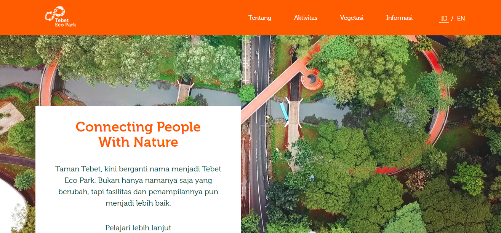

Adinda Aryani
11210251000008
 Tebet Eco Park (TEP) merupakan taman kota yang didedikasikan untuk masyarakat dan lingkungan.
Terletak di Jakarta Selatan dengan area seluas 7,3 hektare, TEP kini hadir sebagai ruang terbuka hijau yang telah direvitalisasi.
Dua kawasan taman yang awalnya terpisah dan berseberangan – Taman Tebet Utara dan Taman Tebet
Selatan, kini telah menjadi satu taman terpadu yang mengusung konsep harmonisasi antara fungsi ekologi, sosial, edukasi dan rekreasi.
Setiap zona TEP dirancang untuk mengambil peran penting dalam keberlangsungan lingkungan dan interaksi sosial,
mulai dari menjaga kualitas alamiah lingkungan hingga meningkatkan kualitas hidup pengunjung dan masyarakat sekitarnya.
Sungai yang di renaturalisasi, rawa (wetland) yang menjadi kolam retensi, konservasi tanaman dan penanaman kembali untuk
mereduksi polusi, sampai berbagai ruang hijau terbuka yang berfungsi memfasilitasi masyarakat untuk berinteraksi.
Lebih dari sebuah taman, Tebet Eco Park adalah ekosistem dimana alam dan manusia saling berinteraksi dan saling melindungi dalam sebuah harmoni.
Sebelum mendatangi Tebet Eco Park, pengunjung harus mendaftar terlebih dahulu. Jika sudah selesai mendaftar, pengunjung berarti sudah mempunyai tiket masuk Tebet Eco Park Harga tiket masuk Taman Eco Park Tebet gratis. Anda hanya perlu daftar sebagai pengunjung via Aplikasi JAKI. Jadi dengan kata lain, Tebet Eco Park tiket masuknya adalah JAKI, sebuah aplikasi multifungsi untuk pemanfaatan berbagai fasilitas publik di DKI Jakarta.
Alamatnyaa yaitu KLIK DISINI